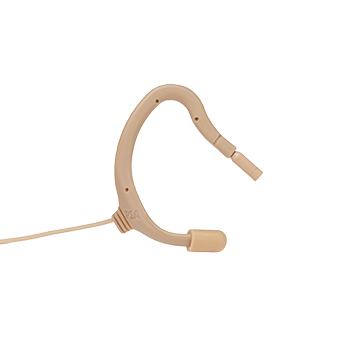

Lavalier
EO-8WLh
Earmount lavalier microphone — beige
Compact earmount lavalier microphone from Point Source, finished in beige for discreet on-camera and stage use. Contact VD Audio Rental for availability, connector options, and production support.